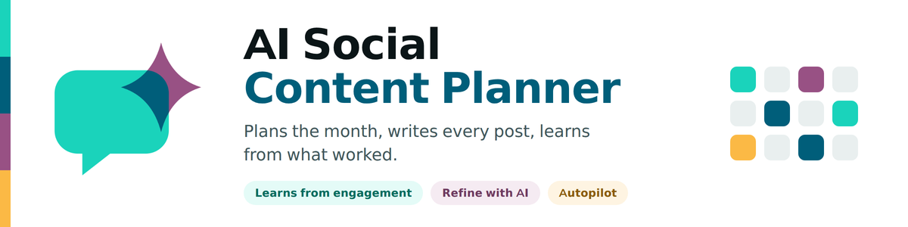
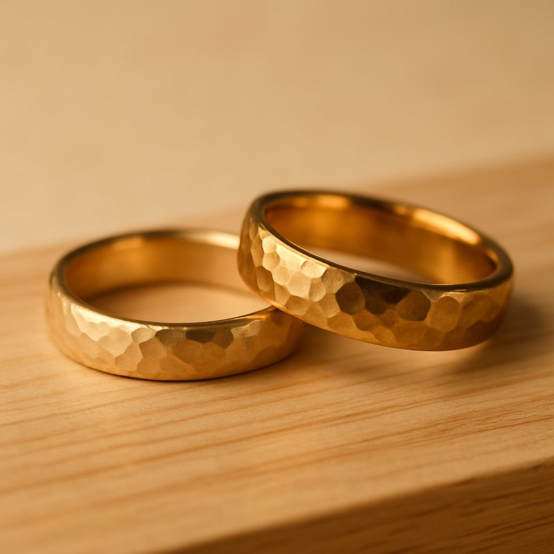
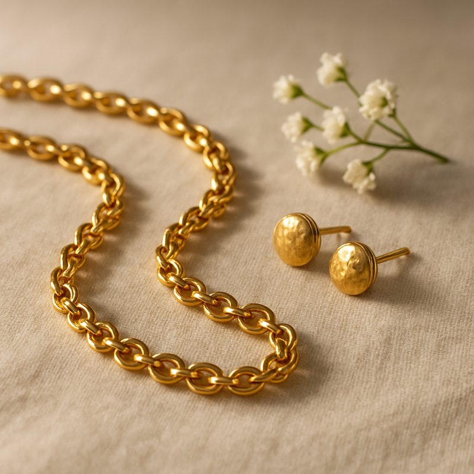

XUBAX AI Social Content Planner sits on top of Odoo's native Social Marketing. Describe your brand once, pick a month, and AI builds the full strategy — themes, copy, calls to action, hashtags and on-brand images — per network. Approve and push: the posts publish through Odoo's own scheduler and calendar.
Monthly theme, per-post copy, CTA, hashtags and inferred trends — written in your brand voice. It never invents testimonials, prices or dates.
Key-free vector graphics drawn by the text model, or photoreal images from OpenAI / Gemini — with your palette, format and logo.
Claude, OpenAI or any compatible endpoint — or reuse a Claude Code subscription on the server with no API key at all. No lock-in.
Approved posts become scheduled social.post records — published by Odoo's cron, shown on its calendar.
Square, post-ready images produced from a single brief and a brand kit — here, a bridal jewellery brand's palette and art direction. Your logo is composited on top and the image is fitted to the exact social format.


Facebook, Instagram, LinkedIn and X copy, each within its own length limit. Instagram posts require an image — the module enforces it before pushing.
Odoo 19 privilege-based security and multi-company record rules. English / Spanish / Spanish (Mexico) bundled.
Requires Odoo Enterprise Social Marketing (social + the network modules).
Photoreal images need an image-provider API key; key-free vector images need the optional
cairosvg library. AI video plugs in through the same pluggable media layer (roadmap).